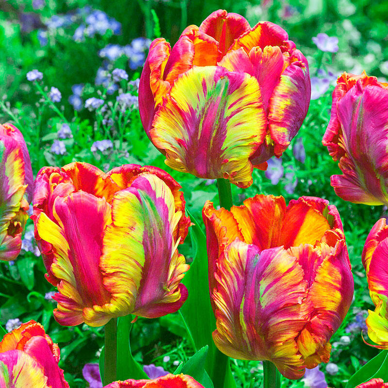
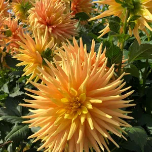
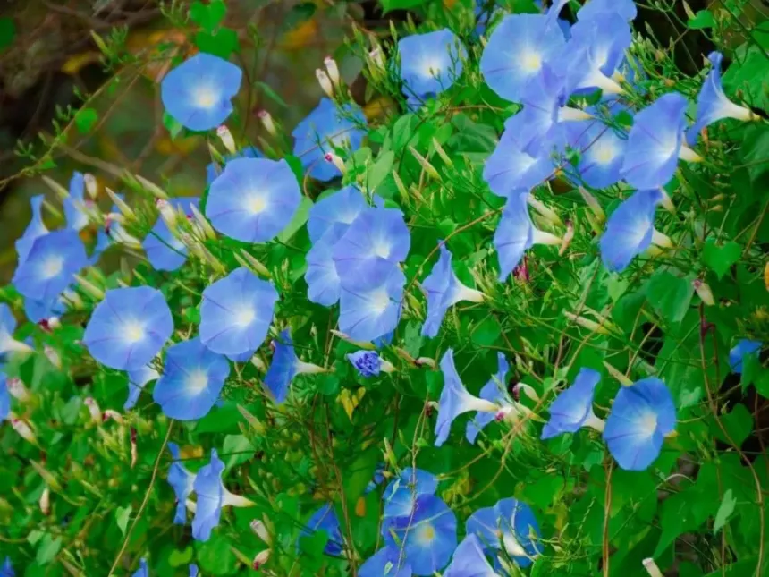
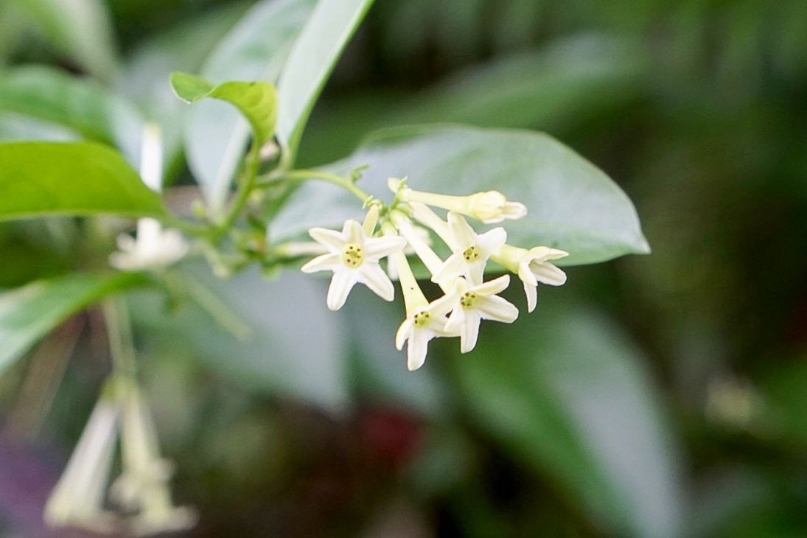

Electric blue roses
A genetically modified rose
Electric Blue Enhanced Flowers are a type of spray flower in the Pompom family that have
a blue tint. They are not naturally occurring blue roses, but rather flowers that have
been genetically modified or dyed to appear blue.
The search results indicate that true blue roses do not exist naturally due to genetic
limitations of rose plants.
Scientists have attempted to create blue roses through genetic modification, such as by
using bacterial enzymes to convert a rose petal compound into a blue pigment. However,
these efforts have not resulted in permanently blue roses.
The search results do not provide any specific information about a product called
'ElectricBlueRoses'. The closest match is the 'Electric Blue Enhanced Flowers' sold by
FiftyFlowers, which are spray flowers artificially colored blue, not true blue roses.
In summary, while blue-tinted flowers can be produced, naturally occurring blue roses do
not exist. The search results do not contain any information about a product called
'ElectricBlueRoses'.

Rainbow tulips
Rainbow parrot tulips
Rainbow Tulips are a vibrant and colorful variety of tulips that bloom in late spring,
offering a spectacular view with unrivaled fragrances. These tulips, particularly the
rainbow parrot tulips, are known for their gorgeous appearance and are a popular choice
for gardens. The rainbow tulip mix consists of different Pride varieties, each petal
displaying a unique color, creating a stunning display of multicolored blooms. These
tulips are Dutch-imported, ensuring high quality and long-lasting, colorful blooms. They
are often arranged in a bouquet with lush seasonal greenery in a heavy clear block vase
for a beautiful presentation. The Rainbow Tulips arrangement is available in different
stem quantities, such as 15 stems for Classic, 25 stems for Deluxe, and 35 stems for
Premium, allowing for various options to suit different preferences. Delivery of Rainbow
Tulips is typically hand-delivered directly to the recipient, ensuring freshness and
quality.
In summary, Rainbow Tulips are a delightful and colorful choice for flower arrangements,
known for their vibrant hues, unique petal colors, and fragrant blooms, making them a
popular and joyful gift to celebrate the spirit of spring.

Sunburst dahlias
Dahlia sunburst
Dahlia 'Sunburst'is a cactus dahlia with golden yellow or orange, spiky petals. These
dahlias are known for their long bloom time, lasting from summer to autumn, and their
resistance to rain damage due to the star-shaped form of the petals. They grow well in
full sun to part shade and can be planted in pots or directly in the ground.
Dahlia 'Autumn Sunburst'has fiery blooms with a blend of red, orange, and yellow tips.
These dahlias feature large, 8-10 inch flowers with ruffled petals. The plants
themselves grow tall and bushy, reaching heights of up to 3 feet. They flower in late
summer and fall.

Frosty morning glories
Flowering plants in the family Convolvulaceae
morning glories facing frosty conditions and the measures taken to protect them from
frost damage. Gardeners have shared their experiences and strategies to safeguard
morning glories from frost, such as using garden fabric, row covers, and even warm water
to create a warmer environment for the plants. Despite the frosty mornings, some
gardeners have successfully nurtured their morning glories through protective measures
like creating tents with garden fabric and using warm water to maintain a higher
temperature under the covers. These efforts have helped the morning glories survive the
frost and continue blooming.

Twilight hydrangeas
Dusk hydrangeas
"Twilight Hydrangeas" are a captivating cultivar of the hydrangea plant, renowned for
their ethereal beauty and enchanting hues reminiscent of the twilight sky. These
stunning flowers boast a mesmerizing palette of soft purples, dreamy blues, and delicate
pinks, blending seamlessly to create a magical display in any garden or floral
arrangement.
With their gracefully arching stems and lush, voluminous blooms, Twilight Hydrangeas add
a touch of elegance and charm to outdoor landscapes and indoor spaces alike. Whether
planted as a focal point in a garden bed, used to adorn a wedding bouquet, or showcased
in a vase as a centerpiece, these hydrangeas never fail to captivate admirers with their
otherworldly allure.
The name "Twilight Hydrangeas" perfectly captures the essence of these enchanting
flowers, evoking the tranquil beauty of twilight hours when the sky is painted with
subtle gradients of color, from deep indigos to soft pastels. As the light fades and day
transitions into night, these hydrangeas seem to come alive, casting a spell of serenity
and wonder wherever they bloom.

Firecracker lilies
Sparkler lilies
"Firecracker Lilies" represent a vibrant and dynamic variety of lilies, renowned for
their explosive bursts of color and lively presence in gardens and floral arrangements.
These captivating flowers draw inspiration from the spirited energy of fireworks, with
their fiery hues and dazzling blooms lighting up any landscape with flair and
excitement.
With their slender, erect stems and bold, trumpet-shaped flowers, Firecracker Lilies
command attention wherever they are planted or displayed. Their vivid petals range from
fiery reds and oranges to brilliant yellows, creating a striking contrast against lush
green foliage and infusing any setting with a sense of celebration and joy.
Whether adorning a flower bed, embellishing a summer bouquet, or serving as a focal
point in a floral centerpiece, Firecracker Lilies are sure to leave a lasting impression
with their exuberant charm and dynamic presence.
The name "Firecracker Lilies" perfectly captures the essence of these spirited flowers,
evoking images of dazzling fireworks lighting up the night sky with their brilliant
bursts of color and energy. Just like their namesake, these lilies ignite the
imagination and ignite a sense of wonder wherever they bloom.

Silver moon daisies
Moonbeam daisies
"Silver Moon Daisies" are a delightful variety of daisies distinguished by their
ethereal beauty and silvery-white petals that shimmer like moonlight. These enchanting
flowers evoke a sense of serenity and celestial elegance, casting a magical glow
wherever they bloom.
With their cheerful, daisy-like blooms and delicate, silver-tinged petals, Silver Moon
Daisies add a touch of celestial charm to gardens, meadows, and floral arrangements.
Their graceful stems sway gently in the breeze, creating a mesmerizing dance of light
and shadow as they capture the essence of a moonlit night.
Whether planted as a border along garden pathways, used to brighten up a moon-themed
bouquet, or showcased in a vase as a luminous centerpiece, Silver Moon Daisies never
fail to captivate with their celestial allure.
The name "Silver Moon Daisies" perfectly captures the celestial beauty of these
enchanting flowers, conjuring images of a moonlit landscape bathed in silvery light.
Like the gentle glow of the moon, these daisies imbue any setting with a sense of
tranquility and wonder.

Golden orchids
Sunburst orchids
"Golden Orchids" represent a rare and exquisite variety of orchids distinguished by
their radiant golden blooms and graceful, exotic appearance. These stunning flowers
exude an air of luxury and elegance, captivating admirers with their shimmering petals
and intricate, sculptural forms.
With their arching stems and intricate, golden-hued flowers, Golden Orchids make a
striking statement in any floral arrangement or garden display. Their golden petals,
often adorned with intricate patterns and delicate veining, create a mesmerizing
contrast against lush green foliage, adding a touch of opulence and sophistication to
any setting.
Whether showcased in a tropical garden, featured in a bridal bouquet, or displayed as a
centerpiece at an elegant event, Golden Orchids never fail to leave a lasting impression
with their breathtaking beauty and timeless allure.
The name "Golden Orchids" perfectly captures the regal and luxurious essence of these
exquisite flowers, evoking images of sun-kissed petals gleaming with radiant golden
hues. Like treasures from a faraway paradise, these orchids infuse any space with a
sense of opulence and grandeur.

Starlight peonies
Celestial peonies
"Starlight Peonies" are a celestial variety of peonies known for their enchanting beauty
and ethereal charm, reminiscent of starlit nights and celestial wonders. These
captivating flowers exude a sense of magic and romance, with their luminous petals and
graceful, billowing forms.
With their voluptuous blooms and delicate, star-shaped petals, Starlight Peonies
captivate onlookers with their celestial allure. Their soft, pastel hues and subtle
iridescence evoke the gentle glow of starlight, casting a dreamy ambiance wherever they
bloom.
Whether adorning a cottage garden, gracing a bridal bouquet, or arranged in a vase as a
radiant centerpiece, Starlight Peonies are sure to captivate with their timeless
elegance and celestial grace.
The name "Starlight Peonies" perfectly captures the celestial beauty of these enchanting
flowers, conjuring images of a night sky adorned with twinkling stars. Like celestial
jewels, these peonies add a touch of magic and wonder to any setting, illuminating the
darkness with their radiant beauty.

Moonlit jasmine
Moonlit jas
"Midnight Jasmine" refers to a captivating variety of jasmine known for its enchanting
fragrance and nocturnal blooming habits, evoking the mystical allure of moonlit nights
and midnight gardens. These aromatic flowers exude a sense of romance and intrigue, with
their intoxicating scent and delicate, star-like blooms.
With their glossy, dark green foliage and clusters of small, white flowers, Midnight
Jasmine adds a touch of elegance and allure to any garden or landscape. Their
intoxicating fragrance fills the air after dusk, enticing pollinators and enchanting
passersby with its sweet, heady aroma.
Whether planted along a garden path, trained to climb a trellis, or enjoyed indoors as a
fragrant houseplant, Midnight Jasmine enchants with its timeless beauty and alluring
scent, transforming any space into a sanctuary of tranquility and romance.
The name "Midnight Jasmine" perfectly captures the mysterious and enchanting nature of
these fragrant flowers, evoking images of moonlit nights and secret gardens. Like
whispers in the dark, the fragrance of Midnight Jasmine adds a touch of magic to the
night, inviting dreams and enchantment to unfold under the starlit sky.

Sapphire orchids
Blue gem orchids
"Sapphire Orchids" represent a captivating and rare variety of orchids distinguished by
their stunning sapphire-blue blooms and elegant, exotic appearance. These exquisite
flowers evoke a sense of opulence and mystery, with their rich, jewel-toned petals and
intricate, sculptural forms.
With their graceful stems and intricate, sapphire-hued flowers, Sapphire Orchids make a
bold and enchanting statement in any floral arrangement or garden display. Their vibrant
blue petals, often adorned with intricate patterns and delicate veining, create a
mesmerizing contrast against lush green foliage, adding a touch of luxury and
sophistication to any setting.
Whether showcased in a tropical garden, featured in a bridal bouquet, or displayed as a
centerpiece at an upscale event, Sapphire Orchids never fail to leave a lasting
impression with their breathtaking beauty and timeless allure.
The name "Sapphire Orchids" perfectly captures the regal and luxurious essence of these
exquisite flowers, evoking images of precious gemstones gleaming with vibrant blue hues.
Like treasures from a hidden paradise, these orchids infuse any space with a sense of
elegance and enchantment.

Golden sunset roses
Amber glow roses
"Golden Sunset Roses" embody the essence of a breathtaking sunset, with their warm,
golden hues and radiant blooms evoking the splendor of dusk. These captivating roses
exude a sense of tranquility and beauty, capturing the magic of the sun's descent below
the horizon.
With their lush, velvety petals and vibrant golden tones, Golden Sunset Roses add a
touch of elegance and romance to any garden or floral arrangement. Their captivating
beauty unfolds like the final moments of a sunset, casting a warm and radiant glow that
illuminates the surroundings.
Whether adorning a wedding bouquet, gracing a garden landscape, or presented as a
heartfelt gift, Golden Sunset Roses are sure to captivate with their timeless charm and
radiant allure.
The name "Golden Sunset Roses" perfectly captures the essence of these enchanting
flowers, evoking images of a sky painted with hues of gold and amber as the sun bids
farewell to the day. Like a cherished memory of a beautiful sunset, these roses infuse
any setting with a sense of warmth and nostalgia.